NAPOLEX (ナポレックス)
1970年創設のヘッドフォンを中心としたオーディオメーカー。創設当時はヘッドフォンの他に当時流行の４チャンネルステレオアダプターなどを発売しており、またその後は通常のスピーカーにも挑戦した。コンデンサー型スピーカーの開発も公表していたが実際の製品までいったのかは不明である。1980年には創業者が会社を売却し、以降オーディオ業界からは完全に姿を消している。
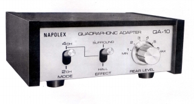
（初期の製品 マトリックス方式の４チャンネルステレオアダプター QA-10)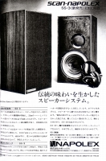
＊ナポレックスの企業情報については、同社の「創業者」を名乗る方のサイトを参考にしています。ただしヘッドフォンについては1980年に全機種製造中止となっているのは事実。
ヘッドフォンをメインとした非常に珍しい企業であり、ヘッドフォンの為の誌聴室も用意していた。その製品はフルオープン型のヘッドフォンやコンデンサー型ヘッドフォンなどユニークなものが多い。また当時のヘッドフォン専業メーカーらしく、バイノーラル関連にも力を入れていた。なお他社のような統一された製品の型番はないようである。
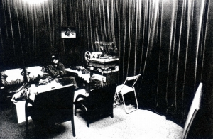 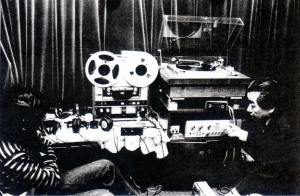 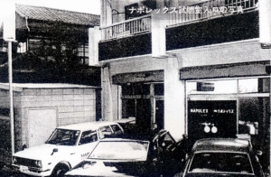
（本社に併設された誌聴室の様子。なんとなくSTAXを彷彿とさせる）
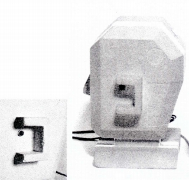
（高級な海外製品より２桁安く販売したダミーヘッド）
NAPOLEX (ナポレックス)の製品を以下のように分類する。（この分類は個人的な意見で、メーカーの分類ではありません）
�T.ダイナミック型ヘッドフォン
�@TPH-100シリーズ
創設当時のダイナミック型ヘッドフォンがTPH-100であり、プロフェッショナル用とされていた。当時の雑誌などでは比較的好評だったようで、後継機にNEW
TPH-100がある。
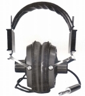
(TPH-100)＊NEW TPH-100についてイベントで撮影した画像を使用しました。撮影及び掲載をご許可いただき、ありがとうございました。
�AWIDEシリーズ
1971年頃発売のコーン型ヘッドフォンの製品群。使用ユニットはWIDE-10が66�oのシングルコーン、WIDE-40,70が67�oのダブルコーンであった。なおこの会社の広告・カタログははったりに満ちており、WIDE-10を「高級機」、WIDE-40を「最高級機」、WIDE-70を「超高級機」と表現している。
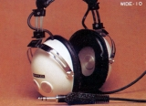
(WIDE-10)�Bその他
上記以外のブランド末期の製品群。SV-2は振動板の素材（25ミクロン厚エステルポリマー）からみてドーム型の製品かもしれない。X-01は純銀リッツ線コード採用した高級機で79年当時で￥78,000と、ソニーのＲ-10がでるまでは、国産最高額の市販モデル。
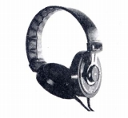
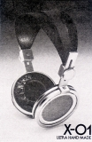
(左 SV-2 右 X-01)
�U.フルオープン型ヘッドフォン
いわゆるイヤパッドを持たない完全なフルオープン型の製品群。歯切れの良い音は評価されたが、当時の技術水準では低音不足は克服できなかったようである。最初の製品がCTX-1であり「CRYSTALEX」と呼ばれる場合もある。ユニットを変更し希土系磁石を採用したのがCTX-3。CTX-1はCTX-3発売時にマイナーチェンジしCTX-1MK�Uとなった。またCTX-1発売前から平行して開発された通常型のヘッドフォンがモニターX-23であり、「X-23」と表記する広告もある。なおCTX-1の前にFO-100という機種の発売が予告されたが、このヘッドフォンが実際に販売されたかは不明。
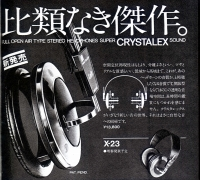
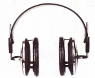
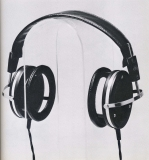
(左 CTX-1 右 CTX-3)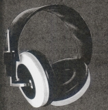
(モニターX-23)
�V.コンデンサーヘッドフォン
コンデンサー型ヘッドフォンの製品群。
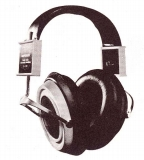
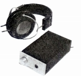
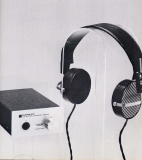
（左 ES-100 中央 EX-1 右 NAS-3)
�W.（番外）ヘッドフォンアンプ
ナポレックスは1970年代にレコードプレイヤーを直結できるプリアンプ機構がついたヘッドフォン専用アンプを出していた。最近ではオーディオ関係のイベントで「インフラアコースティックス」のブースでみたことがある方もいると思う。また、まれにオークションにも登場する。
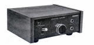
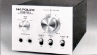